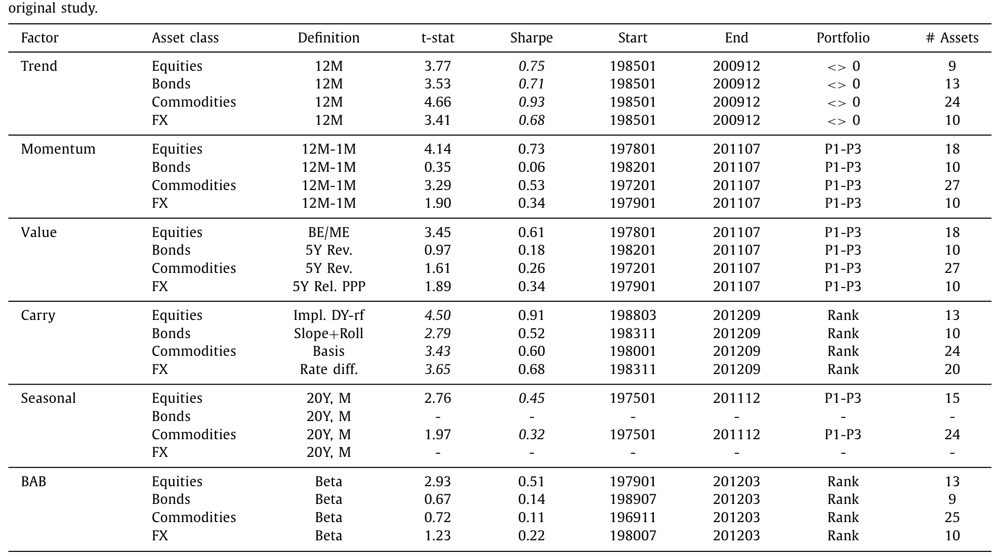
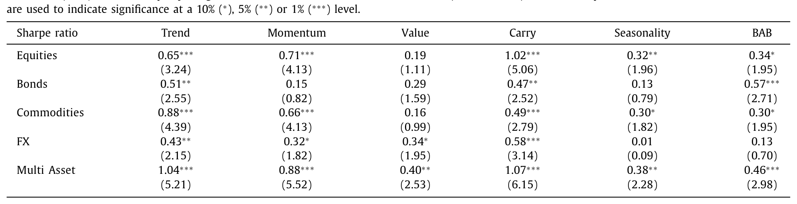
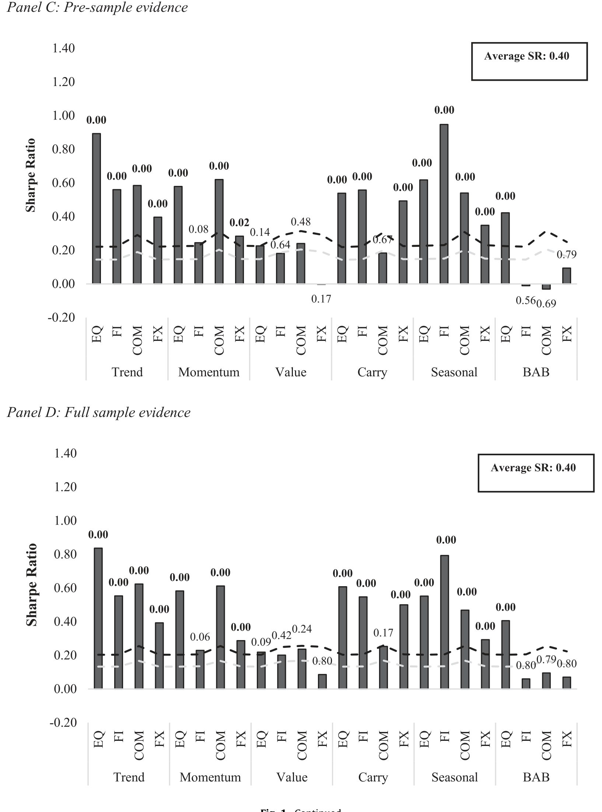
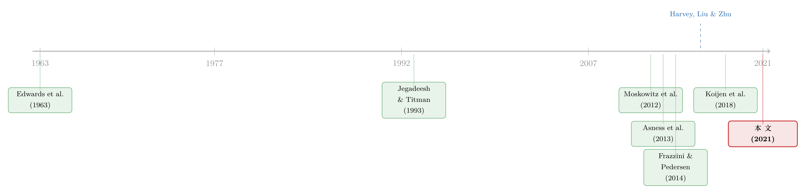

把因子拖回 1800 年：一场对 p-hacking 的两百年审判
本文读的是 Baltussen, Swinkels & Van Vliet (2021, JFE)：作者把股票指数、国债、商品、货币四大类资产上的 6 个经典因子（趋势、动量、价值、carry、季节性、BAB）摊成 24 个「全球因子溢价」，先在一套统一、且专门防 p-hacking 的检验框架里复制，再把样本一路向前推到 1800 年——用 217 年、其中 150 多年是从未被人挖过的「新数据」来做一次彻底的样本外检验。结论是：复制阶段的统计证据「暧昧不清」，但样本外的绝大多数因子溢价依然稳健、几乎没有衰减，且与市场、下行、宏观风险基本无关。
1 引言：一个让人睡不着觉的问题
先讲一个所有做实证资产定价的人都心知肚明、却又不太愿意大声说出来的尴尬。
过去四十年，金融学期刊里塞满了各式各样的「因子」——价值、动量、carry、低风险……数量之多，以至于 Cochrane 干脆给它起了个名字叫「因子动物园 (factor zoo)」。可问题是：这些因子，有多少是真的，有多少只是被「试」出来的？Harvey, Liu & Zhu (2016) 把三百多个股票层面的异象放进一个严格的、考虑了多重假设检验偏误的框架里重测，结果发现一大批都变得可疑；Hou, Xue & Zhang (2020) 更狠，在降低小盘股权重之后，将近 450 个异象里有 64% 的 t 值低于 2、85% 低于 3。Chordia, Goyal & Saretto (2020) 用数据挖掘的方式生成了大约 210 万 个交易策略，在用上「正确的统计门槛」之后，能活下来的寥寥无几——而且活下来的那几个还往往讲不出什么经济学故事。
这就是 p-hacking 的阴影。科学家面对统计检验的局限，手里握着一大把「研究自由度 (researcher degrees of freedom)」——数据怎么清洗、用哪种统计方法、怎么聚合——再叠加上「不发表就出局」的发表激励，最后被印在期刊上的「显著结果」，很可能是第一类错误 (type I error)、多重假设检验偏误、和发表偏误三者的混合物。
于是，一个自然的问题是：那些被反复引用、被业界奉为圭臬的「全球因子溢价」，会不会也只是 p-hacking 的产物？
本文（下称 BSV）选了 6 个最经典、文献关注度最高的因子，把它们放到 4 大类资产上，凑成 24 个「全球因子」，然后干了两件事——先审判，再取证。
2 把六个嫌疑人请上被告席
BSV 锁定的是文献里最有分量的五项研究、六个因子：
- 时间序列动量，即趋势 (time series momentum, trend)：Moskowitz, Ooi & Pedersen (2012)；
- 横截面动量 (cross-sectional momentum) 与价值 (value)：Asness, Moskowitz & Pedersen (2013)；
- Carry：Koijen, Moskowitz, Pedersen & Vrugt (2018)；
- 季节性 (return seasonality)：Keloharju, Linnainmaa & Nyberg (2016)；
- 低风险 / 押注反 beta (betting-against-beta, BAB)：Frazzini & Pedersen (2014)。
四大类资产是：国际股票指数、十年期国债指数、商品、货币。注意一个关键的边界——这里不含个股，全部是资产类层面的「指数」，所以 Novy-Marx & Velikov (2021) 指出的「BAB 溢价主要被微型股驱动」那种担心，在这里并不适用。
把六个因子摆到四类资产上，本该是 24 个组合，但季节性当年在国债和货币上没人测过，所以原始研究里只有 22 个有报告值。BSV 先把这五项研究的结果与测试选择整整齐齐地汇总成一张表：因子定义、t 值、夏普比率、样本起止、组合构建方法、资产个数。

Table 1
如表 1 所示，原始研究的证据看上去相当漂亮：22 个有报告的全球因子全部为正，很多夏普比率在 0.30 以上，22 个里有 14 个 t 值超过 1.96。carry 和趋势在每一类资产上都有很高的 t 值；价值则相对孱弱，4 类资产里有 3 类 t 值低于 1.96。
但故事的第一道裂缝，恰恰藏在这张表的细节里。这五项研究虽然彼此相似，却在「研究自由度」上各行其是：光是国债的样本起点，就从 1982 年 1 月一路散落到 1989 年 7 月；横截面因子的组合构建，有的用「顶档减底档的等权组合 (P1-P3)」，有的用「按排序赋权 (rank)」。每一处不一致，都是一个可以被「调」的旋钮。
3 第一审：在同一把尺子下复制
这里要区分两个词。复现 (reproduction) 是用原作者的数据和代码，原样跑出一模一样的数字；复制 (replication)——按 Welch (2019) 的定义——是用「相似但不必相同」的数据与方法重做一遍，看结论稳不稳。BSV 做的是后者：统一资产池、统一因子构建规则，刻意把研究自由度收紧。
BSV 把所有因子的构建规则统一：趋势和动量都定义为「过去 12 个月（减去最近 1 个月）的超额收益」；价值在股指上用股息率、在国债上用实际收益率、在商品上用 5 年现货价格反转、在货币上用购买力平价；carry 统一定义为各品种的隐含收益率；季节性是「过去 20 年里某一日历月的平均收益」；BAB 则做多低 beta、做空高 beta，并按事前 beta 中性化。所有头寸都按事前波动率（BAB 按事前 beta）缩放到恒定水平，收益一律以美元、超出本地融资利率计。横截面因子统一用「排序减横截面均值」赋权。
然后在各因子原始的样本期内重测一遍。结果就是这篇文章第一处「冷水」：

Table 2
如表 2，夏普比率比原始研究普遍下降，但仍然可观。24 个资产类—因子组合的平均夏普比率是 0.41；在常规的 5% 水平上显著的，只剩 11 个；若把门槛提到 t 值 3.00，则只有 6 个还站得住。多资产组合（四类等权合并）的表现最强——carry 的多资产夏普高达 1.07（t = 6.15），趋势 1.04（t = 5.21），动量 0.88（t = 5.52）。而当初没被测过的季节性，在国债（t = 0.79）和货币（t = 0.09）上几乎毫无踪影。
换句话说：经济意义还在（夏普比率不低），但统计证据开始变得暧昧。 这正是 p-hacking 批判最锋利的地方——同样的数据，换一套同样合理的旋钮，显著性就缩水了一半。
4 一把新尺子：break-even prior odds
到这里，BSV 没有停留在「数数有几个 t 值过线」。他们引入了对 p-hacking 的两种现代回应，并自己又添了一把新尺子。
第一种是 Harvey, Liu & Zhu (2016) 等人主张的「把 t 值门槛从 1.96 抬到 3.00」。这与 Benjamin et al. (2018) 跨学科呼吁的「把显著性标准从 p = 0.05 收紧到 p = 0.005」本质上是一回事——后者等价于把 t 门槛从 1.96 提到 2.81。
第二种是 Harvey (2017) 倡导的贝叶斯视角。频率派 p 值回答的是「在原假设成立的前提下，看到这组数据有多罕见」；可我们真正想知道的，是「在看到了这组数据之后，原假设成立的概率有多大」。要回答后者，可以借助最小贝叶斯因子 (minimum Bayes factor, MBF; Edwards et al., 1963)。对一个 t 统计量，下降型的最小贝叶斯因子写作：
$$ \text{MBF} = \exp\!\left(-\frac{t^2}{2}\right) $$
它给了备择假设「最大的优待」，因此代表了数据能把后验赔率从先验赔率上撬动的最大幅度。贝叶斯因子把先验赔率（看数据前）和后验赔率（看数据后）连了起来：
$$ \text{posterior odds} = \text{MBF} \times \text{prior odds} $$
Harvey (2017) 用一个 4:1 的先验赔率（他称之为 'Perhaps'）把每个因子的 p 值「贝叶斯化」——这正是文中 Fig. 1 每根柱子上方标注的那个数字。用上这套方法，显著的全球因子就更少了。
可贝叶斯方法有个软肋：先验赔率得自己定，而这个主观选择往往对最终的贝叶斯 p 值有举足轻重的影响。怎么办？BSV 的巧思是反过来问：到底要先验赔率取到多大，贝叶斯 p 值才恰好等于我选定的显著性门槛？ 这个临界值，他们称为「盈亏平衡先验赔率 (break-even prior odds)」。
它的妙处在于，把「定先验」这件主观的事，翻译成了一句人人都能掂量的大白话：你得对这个因子先验地怀疑到什么程度，才足以推翻文献给出的证据？把这把尺子用在复制阶段，BSV 的结论是——「你不需要多么怀疑，就足以把文献里的这些证据打个折扣」。第一审到此，被告席上的六个因子，看起来凶多吉少。
5 反转：把样本一路拖回 1800 年
如果故事到此为止，这就只是又一篇「因子可能是假的」的 p-hacking 檄文。但真正关键的一步，在第二幕。
BSV 的逻辑非常干净：如果这些因子溢价真是 p-hacking 的产物，那么它们在一段研究者从没见过、没机会去「调」的数据上，就应该消失。 这是对 p-hacking 最釜底抽薪的检验——你没法对你从未触碰过的数据做手脚。
于是他们动手构建了一个又深又几乎无人开垦的历史数据库，把四大类资产的全球因子收益一路向前推到 1800 年。这意味着平均每个因子多出了 150 多年全新的、独立的样本。数据来源横跨 Bloomberg、Datastream、OECD，并与 Dimson-Marsh-Staunton 数据库（始于 1900）、Jordà-Schularick-Taylor 宏观史数据库（始于 1870）、Schwert 的美国数据（始于 1802）、John Turner 的英国数据等逐一交叉校验，还做了去恶性通胀等一系列事前筛选（比如剔除了 1965 年前的韩国股票收益、1918–1939 年瑞士的股息率等「怪异」序列）。
历史数据的最大敌人是生存偏误 (survivorship bias) 与拼接误差。BSV 在这件事上花了大量笔墨：逐一核对每条序列的缺口、一阶与二阶自相关的水平和动态，把模式异常的序列直接剔除。这是这篇论文最「脏活累活」、也最值得尊敬的部分。
结果呢？反转出现了。

Figure 1: Continued
如图 1，从 Panel A（原始结果）到 Panel B（复制的样本内）、Panel C（1800 年起的样本前期 pre-sample）、再到 Panel D（1800–2016 全样本）——绝大多数因子溢价在样本外稳稳地站住了。样本前期 24 个组合的平均夏普比率是 0.40，而样本内（Panel B）是 0.41——几乎没有任何样本外衰减。再用盈亏平衡先验赔率去量：这一次，你得「极度怀疑」才能无视样本前期的证据。
少数例外仍然存在，而且诚实地被点了出来：货币上的价值、以及股票之外的 BAB，依旧偏弱——这与 Frazzini & Pedersen (2014) 自己的发现一致（他们在股票上的 BAB 很强，但在货币、国债横截面、商品上很弱）。反过来，当初没被测过的国债和货币的季节性，在这段全新样本里却成了显著的因子溢价，算是对文献的一个增量补充。
到这里，论文的核心论点已经立住了：复制阶段的暧昧，更像是「研究自由度」带来的噪声，而不是因子本身的虚假；一旦放到两百年的样本外，绝大多数全球因子溢价不仅没消失，反而稳健得惊人。
6 那它们到底是不是「风险补偿」？
立住了「真」，下一个自然的问题就是：这些钱，是对什么风险的补偿？
传统资产定价理论会说，预期收益的差异要么来自市场风险，要么来自下行风险 (downside risk)（Bawa & Lindenberg, 1977），要么来自宏观经济风险（Chen, Roll & Ross, 1986；Fama & French, 1989；Ferson & Harvey, 1991）。但晚近这几十年是历史上异常「太平」的一段——没有大规模战争、全球繁荣、大衰退寥寥——这严重限制了「坏状态」的样本数，让风险解释很难被真正检验。
而 217 年的样本恰好补上了这一课：里头有足足 43 年的熊市、74 年的衰退。在这样一个「坏状态」充足的样本里，BSV 跨多个检验反复测，结论是——全球因子收益与市场、下行、宏观风险基本毫无关系。
他们还顺手检验了因子之间的「独立性」：大多数因子彼此基本不相关、互不张成 (do not span each other)；尤其有意思的是，价值因子在控制了其他因子之后，溢价反而更高了。这意味着想用某个单一的「全球共同成分」去统一解释所有因子，是行不通的。
于是，论文落到了它最有冲击力的那句话上：这些在两百年里稳健存在、又与风险无关的全球因子溢价，对传统的（基于风险的）资产定价理论构成了挑战。
7 文献脉络
把这篇论文放回它所在的坐标系里，会看得更清楚。它其实站在两条河流的交汇处。
一条河，是「因子发现」。早年的实证资产定价多盯着单一资产类（通常是美股）：Jegadeesh & Titman (1993) 的动量、Fama & French (1993) 的价值。新世纪后，研究者把这些因子推向全球、推向多资产——Moskowitz, Ooi & Pedersen (2012) 的趋势、Asness, Moskowitz & Pedersen (2013) 的「价值与动量无处不在」、Frazzini & Pedersen (2014) 的 BAB、Keloharju, Linnainmaa & Nyberg (2016) 的季节性、Koijen et al. (2018) 的 carry。这条河越流越宽，也越流越浑——因子越来越多，「动物园」越来越大。（关于「因子动物园」从何而来，可参见《弱替代：因子动物园是从哪里冒出来的？》与《压缩横截面：因子动物园的尽头》。）
另一条河，是「对发现的怀疑」。Harvey, Liu & Zhu (2016) 的「……and the Cross-Section of Expected Returns」、Harvey (2017) 的主席演讲、Hou, Xue & Zhang (2020) 的「复制异象」，把多重检验、发表偏误、p-hacking 摆上了台面。这股怀疑论，是过去十年实证金融最重要的方法论自省。（关于异象的统计推断陷阱，亦可参见《事件研究里的「假阳性」》。）

BSV 这篇论文，恰恰是把这两条河引到了一起：它用怀疑论的武器（统一框架、贝叶斯 p 值、盈亏平衡先验赔率），去重审因子发现的成果，再用一段任何人都无法 p-hack 的两百年历史去做终审。它既不是无脑的「因子辩护士」，也不是一味的「异象屠夫」——它给出的是一个有条件的、经得起 217 年检验的结论。（顺带一提，carry 这个因子在更长样本里的命运，本博客也聊过，见《被「藏起来」的收益：当一个三十年回报为零的策略，其实从不为零》。）
8 评论与延伸（Q&A + 研究方向）
(a) 几个可能的疑问
Q：「复制」结果那么弱，凭什么还说因子是真的？
因为「复制阶段的弱」和「样本外的强」指向同一个解释：复制阶段把研究自由度收紧后，显著性下降，更像是统计噪声与设定差异的产物；而 1800 年起的 150 多年全新样本上，平均夏普比率（0.40）与样本内（0.41）几乎相等、毫无衰减。如果是 p-hacking，新样本本该让因子消失——它没有。这正是这篇论文论证结构的精髓。
Q：「盈亏平衡先验赔率」和普通贝叶斯 p 值有什么本质区别？
普通贝叶斯 p 值要你先定一个主观先验赔率，而这个选择常常主导结论。盈亏平衡先验赔率反过来：它问「先验要怀疑到什么程度，证据才恰好不显著」，把一个需要主观输入的量，变成一个可解读的输出——你只需判断「我有没有那么怀疑」。它本身不依赖任何特定先验。
Q：把样本推到 1800 年，难道不会被生存偏误和数据错误污染？
这是最大的威胁，作者也最当回事。他们与多个独立历史数据库交叉校验、逐条检查序列的缺口与自相关、剔除模式异常的序列、做去恶性通胀筛选。但说到底，越古老的数据噪声越大、可得资产越少，这层不确定性无法完全消除——这也是读者应保留的最大保留意见。
Q：为什么货币价值和「股票之外的 BAB」是例外？
这与 Frazzini & Pedersen (2014) 自己的发现一致：BAB 在股票上强、在货币/国债横截面/商品上弱。作者没有回避，而是如实报告。一个可能的解释是这些资产类上的杠杆约束、套利成本结构与股票不同，但论文没有给出确定答案。
Q：这篇文章不含个股，结论还能推广到股票异象吗？
不能直接推广。全部是资产类「指数」层面，所以它绕开了 Novy-Marx & Velikov (2021) 指出的「BAB 被微型股驱动」之类的问题，但也意味着它讲的是「全球宏观因子」的故事，与 Hou-Xue-Zhang 那种几百个个股异象的世界不是同一回事。
Q：「与风险无关」是不是下得太重了？
作者用 43 年熊市、74 年衰退的坏状态样本去测市场/下行/宏观风险，确实比晚近样本更有说服力。但「无关」是基于他们选取的那几类风险代理；行为金融或更精细的状态变量（流动性、融资约束）未必被涵盖。结论稳健，但不是盖棺定论。
(b) 几个可能的研究问题与提案
1. 把这套「两百年审判」搬到公司债 / 信用因子上 - 【经济故事】信用市场的因子（信用动量、carry、低风险）研究历史远短于股票，样本几乎都集中在 2000 年后这段「太平」期。若能把信用利差与违约序列向前推，就能像 BSV 一样区分「真因子」与「太平期幻觉」。 - 【可行性】中。Moody's/标普的历史违约数据、Hoover 年鉴、历史债券价格能往前推到 20 世纪初，但月度信用利差序列稀疏、拼接难度大；识别上可沿用 BSV 的「样本前期 vs 样本内」对比框架。
2. 把「盈亏平衡先验赔率」做成一个横截面排序变量 - 【经济故事】如果每个因子都能算出一个「你得多怀疑才能否定它」的数字，那它本身就是一把衡量因子可信度的连续标尺。可以检验：盈亏平衡先验赔率高的因子，是否在真正的样本外（如发表后）衰减得更慢？ - 【可行性】高。所需只是各因子的 t 值与样本期，公开可得；与 McLean & Pontiff 式的「发表后衰减」研究天然衔接，doable。
3. 外资持有人结构与全球因子溢价的「可套利性」 - 【经济故事】BSV 说因子与风险无关，那它们为什么没被套利掉？一个猜想是：能在 24 个全球市场同时实施这些策略的，是少数跨境机构投资者；当某市场的外资持有比例上升、套利资本进入，因子溢价是否随之收敛？ - 【可行性】中。需要各国市场的外资持有数据（IMF CPIS、各国央行）与因子收益匹配；识别可用外资准入政策变化作为外生冲击，但跨国数据口径统一是难点。
4. 流动性是不是被遗漏的那个风险维度？ - 【经济故事】BSV 测了市场/下行/宏观风险，独缺一个系统性的全球流动性维度。carry 与 BAB 在文献里常被认为是流动性/融资约束的补偿——在两百年样本里，因子收益是否在全球流动性枯竭的年份集中受创？ - 【可行性】中。历史流动性代理（如金本位下的黄金流动、银行危机年份）可构建；识别上可用 Jordà-Schularick-Taylor 的危机编年作为「坏状态」标记，与本文的 43 年熊市/74 年衰退框架兼容。
5. 多资产因子组合的「时机」价值 - 【经济故事】本文显示多资产等权组合的夏普比率远高于单一资产（carry 多资产 1.07 vs 单类 0.47–1.02）。那么因子之间的相关性是否在「坏状态」里系统性上升（即分散化在最需要时失效）？这关乎这些策略的真实可投资性。 - 【可行性】高。所需数据就是本文已构建的因子收益序列；用滚动相关、状态切换模型即可检验，是一个干净的后续。
评论与延伸：我的判断
这篇论文最大的贡献，不在于「又验证了几个因子」，而在于它提供了一个可复制的方法论模板：先用统一框架做 Welch 式复制以剥离研究自由度，再用「盈亏平衡先验赔率」把主观先验问题翻译成可解读的怀疑度，最后用一段无法被 p-hack 的超长历史做终审。这三件套，比任何单个因子的 t 值都更有价值——它是对「因子动物园」之争一种建设性的回应：既不无脑辩护，也不一味屠杀。
对识别，我最大的保留意见集中在数据本身。1800–1900 这一百年的因子收益，无论作者如何交叉校验，可投资资产稀少、价格序列稀疏、拼接与生存偏误的幽灵都难以彻底驱散；「样本前期平均夏普 0.40」这个数字，置信区间恐怕远比一个点估计暗示的要宽。其次，「与风险无关」依赖于作者选定的那几类风险代理，缺了一个系统性的全球流动性/融资约束维度——而 carry 与 BAB 恰恰最常被归因于此。
后续我最想看到的，是把这套「两百年审判 + 盈亏平衡赔率」搬到信用市场与外资持有人的语境里：信用因子的研究史太短、太集中于太平年代，正是最需要一场长样本终审的地方；而「为什么这些与风险无关的溢价没被套利掉」这个问题，答案也许就藏在谁有能力、在多少个市场同时下注里。
参考文献
Asness, C., Moskowitz, T., Pedersen, L. (2013). Value and momentum everywhere. Journal of Finance 68(3), 929–985.
Bawa, V., Lindenberg, E. (1977). Capital market equilibrium in a mean-lower partial moment framework. Journal of Financial Economics 5(2), 189–200.
Benjamin, D., Berger, J., Johannesson, M., et al. (2018). Redefine statistical significance. Nature Human Behaviour 2, 6–10.
Chen, N.F., Roll, R., Ross, S. (1986). Economic forces and the stock market. Journal of Business 59(3), 383–403.
Chordia, T., Goyal, A., Saretto, A. (2020). Anomalies and false rejections. Review of Financial Studies 33(5), 2134–2179.
Edwards, W., Lindman, H., Savage, L.J. (1963). Bayesian statistical inference for psychological research. Psychological Review 70(3), 193–242.
Frazzini, A., Pedersen, L. (2014). Betting against beta. Journal of Financial Economics 111(1), 1–25.
Harvey, C. (2017). Presidential address: the scientific outlook in financial economics. Journal of Finance 72(4), 1399–1440.
Harvey, C., Liu, Y., Zhu, H. (2016). …and the cross section of expected returns. Review of Financial Studies 29(1), 5–68.
Hou, K., Xue, C., Zhang, L. (2020). Replicating anomalies. Review of Financial Studies 33(5), 2019–2133.
Jegadeesh, N., Titman, S. (1993). Returns to buying winners and selling losers: implications for stock market efficiency. Journal of Finance 48(1), 65–91.
Keloharju, M., Linnainmaa, J., Nyberg, P. (2016). Return seasonalities. Journal of Finance 71(4), 1557–1590.
Koijen, R., Moskowitz, T., Pedersen, L., Vrugt, E. (2018). Carry. Journal of Financial Economics 127(2), 197–225.
Linnainmaa, J., Roberts, M. (2018). The history of the cross-section of stock returns. Review of Financial Studies 31(7), 2606–2649.
Moskowitz, T., Ooi, Y., Pedersen, L. (2012). Time series momentum. Journal of Financial Economics 104(2), 228–250.
Novy-Marx, R., Velikov, M. (2021). Betting against betting against beta. Journal of Financial Economics, forthcoming.
Welch, I. (2019). Reproducing, extending, updating, replicating, reexamining, and reconciling. Critical Finance Review 8(1–2), 301–304.